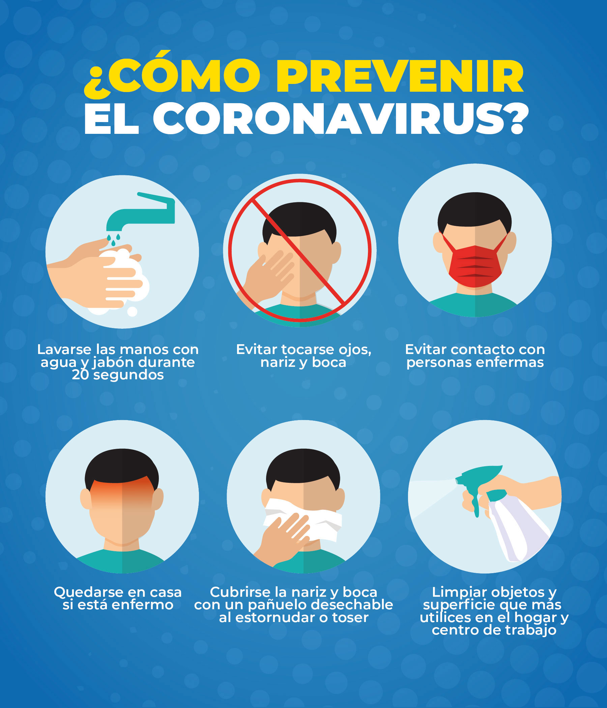

COVID-19
El Covid-19 ha sido hasta ahora una de las enfermedades más devastadoras que a golpeado a la humanidad en el siglo XXI, según lo que sabemos este virus aparece en la ciudad de Wuhan, China a finales de año 2019.

Imágen Tomada de las Naciones Unidas
Prevención
El Covid-19 se puede prevenir si tomamos medidas de manera inmediata en nuestras vidas y las compartimos con los demás, ya que si seguimos estas indicación no solo salvaras tu vida si no también la de los demás.
Las medidas que los expertos nos recomiendan tomar son las siguientes: Tener por lo menos 1.5 metros de distancia con los demás, el uso de tapabocas en lugares públicos, la desinfección con alcohol antiséptico de los implementos que se utilizarán en casa como la comida que traes de los supermercados o otros productos ya sean electrodomésticos, muebles, etc. Lo más importante es desinfectar nuestra ropa y zapatos al llegar a cualquier lugar, también la toma de temperatura puede ayudar a evitar la entrada de posibles contagiados a un recinto, asimismo es importante tener un control de la cantidad de personas que se encuentran en el lugar y sus datos para informar si se sabe de algún riesgo que tuvo la persona por estar en aquel lugar.
